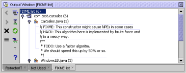

Fixme Scan is a powerful and configurable search tool for FIXME-like comments in the source code. It also enables you to add timestamps to your FIXME comments in order to track their history.
You can run Fixme Scan for a type, a package, or an entire project. For more detailed instructions on usage please see the references down below.
The results of the search are shown in an output window structured like a package tree. Double-clicking an entry takes you to the comment's location in the source window.
